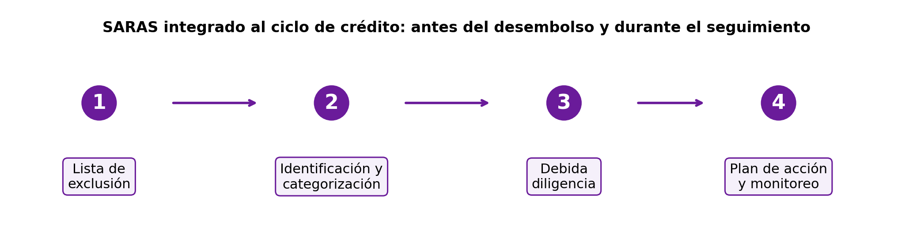

[GRI 2‑12, 2‑13, 3‑3 | SASB FN‑CB‑410a.2, FN‑MF‑450a.3, FN‑CF‑230a.3 | NIIF S1 — Gobernanza, Gestión de riesgos | NIIF S2 — Gestión de riesgos climáticos]
La gestión integral de riesgos es un pilar fundamental para nuestra resiliencia institucional, la estabilidad financiera y la creación de valor sostenible en el largo plazo. Durante 2025 fortalecimos nuestro marco de apetito, identificación, medición, control y monitoreo de riesgos, con el objetivo de acompañar el crecimiento del negocio, anticipar riesgos emergentes y mantener un enfoque preventivo en la toma de decisiones. Este marco nos permite gestionar de manera integral los impactos financieros, operativos, ambientales y sociales asociados a nuestras actividades, en coherencia con la estrategia del Banco y con las expectativas de nuestros grupos de interés.
Nuestro enfoque de gestión integral de riesgos aplica a todas las operaciones de Banco Guayaquil y cubre los riesgos derivados de nuestras actividades financieras, operativas y de soporte, así como aquellos asociados a nuestra cartera crediticia, a la relación con clientes, proveedores estratégicos y otros actores relevantes de nuestra cadena de valor. Este enfoque considera riesgos financieros y no financieros, incluidos los ambientales, sociales, climáticos, tecnológicos y de información, en coherencia con nuestro modelo de negocio, la estrategia institucional y los resultados del análisis de doble materialidad.
Gestión eficaz del riesgo
[GRI 3‑3 | SASB FN-CB-410a.2 | NIIF S1 — Gestión de riesgos]
Nuestro modelo de gestión de riesgos nos permite identificar de forma anticipada los eventos que podrían afectar el cumplimiento de los objetivos institucionales, valorarlos según su probabilidad e impacto y definir medidas de mitigación acordes con su naturaleza. La evaluación considera el riesgo inherente, la calidad de la gestión y el riesgo residual, asegurando que las decisiones se mantengan alineadas con el apetito y los niveles de tolerancia definidos por la Institución.
Elementos del modelo de gestión de riesgos y su aplicación
| Elemento del modelo | Aplicación 2025 |
|---|---|
| Apetito y tolerancia al riesgo | Actualización y seguimiento de indicadores clave para asegurar que las principales categorías se mantengan dentro de los niveles definidos por la Institución. |
| Matriz de riesgo institucional | Evaluación del riesgo inherente, calidad de gestión y riesgo residual para orientar controles, recursos y acciones preventivas. |
| Comité de Administración Integral de Riesgos | Analiza los resultados de los indicadores clave y evalúa la consistencia de las estrategias, políticas y controles asociados a la gestión de los riesgos financieros y no financieros, asegurando una visión integral del riesgo a nivel institucional. |
| Tres Líneas: Actúa, Refuerza y Revisa | Mayor claridad de roles de control y participación activa de las áreas operativas en la identificación temprana y mitigación de riesgos no financieros. |
La administración integral de riesgos se complementa con instancias de supervisión, control y aseguramiento que verifican la efectividad del modelo, su alineación con el apetito de riesgo y el cumplimiento normativo. En 2025, el Directorio, los comités normativos, Auditoría Interna y los procesos de aseguramiento externo mantuvieron un seguimiento permanente sobre las posiciones de riesgo, la efectividad de los controles, los planes de acción y el cumplimiento regulatorio.
Capas de supervisión y aseguramiento del riesgo
| Directorio | Comités normativos | Riesgo Integral | Áreas de negocio y soporte | Auditoría y aseguramiento |
|---|---|---|---|---|
| Supervisión estratégica | Seguimiento y decisión | Identificación, medición, control y seguimiento | Gestión diaria | Verificación independiente |
Principales riesgos y claves de gestión
[GRI 3‑3 | SASB FN-CB-410a.2 | NIIF S1 — Gestión de riesgos | NIIF S2 — Gestión de riesgos climáticos]
Durante 2025, nuestro perfil de riesgo se mantuvo en una posición favorable. Los mecanismos de control y monitoreo implementados permitieron mitigar los riesgos identificados y sostener una gestión prudente frente al entorno macroeconómico, regulatorio, tecnológico, ambiental y social.
Las métricas utilizadas para el monitoreo de los principales riesgos financieros y no financieros se definen en coherencia con el marco de apetito y tolerancia al riesgo aprobado por el Directorio y se revisan de forma periódica en los comités normativos correspondientes. Estos indicadores permiten evaluar la efectividad de los controles, anticipar desviaciones relevantes y apoyar la toma de decisiones oportunas, con el objetivo de mantener los niveles de riesgo dentro de los rangos aceptables definidos por la Institución y preservar la estabilidad financiera, la continuidad operativa y la confianza de nuestros grupos de interés.
Riesgos y claves de gestión
| Riesgo | Descripción | Claves de gestión | Indicadores 2025 |
|---|---|---|---|
| Crédito | Incumplimiento de las obligaciones crediticias de clientes y contrapartes. Incluye factores sectoriales, territoriales y ambientales que pueden incidir en la capacidad de pago. |
|
Índice de Morosidad:
Índice de cobertura de riesgo crediticio: 144 %; Cobertura global: 348,57 %. |
| Liquidez | Insuficiencia de fondos para cumplir obligaciones de corto plazo o atender necesidades de fondeo en escenarios de estrés. |
|
Liquidez: 33,22 %. Activos líquidos: US$ 2.523 millones. Depósitos del público: US$ 7.713 millones (+18,03 %). Liquidez estructural: primera línea 17,85 %; segunda línea 18,68 %. |
| Mercado | Impacto de variaciones en tasas de interés, valor razonable de inversiones, tipo de cambio o dinámica bursátil. |
|
Portafolio de inversiones: US$ 1.511 millones. 76 % investment grade. VaR: 0,11 % del patrimonio técnico. Sensibilidad a +100 pb: 1,62 % margen financiero y 0,43 % valor patrimonial. |
| Operacional | Pérdidas derivadas de fallas en procesos, personas, tecnología o eventos externos, incluidos proveedores críticos. |
|
Pérdidas operacionales: 0,53 % del patrimonio. Riesgo tecnológico: 0,35 % del patrimonio. Plan anual de pruebas de continuidad completado. ISO 22301 mantenida. |
| Seguridad de la información y ciberseguridad | Amenazas que pueden afectar confidencialidad, integridad, disponibilidad y privacidad de la información, así como la continuidad de servicios digitales. |
|
Nivel de seguridad: 94 %. Riesgo de vulnerabilidades: 17 % (-25 p.p. vs. enero). RiskRecon: A, 9,9/10. 2.115 incidentes contenidos. 0 % de riesgo residual alto en activos evaluados. |
| Protección de datos personales | Riesgo de uso, tratamiento, acceso, conservación o divulgación inadecuada de datos personales de clientes, colaboradores, proveedores u otros grupos de interés, con potencial impacto legal, reputacional y de confianza. |
|
Controles mantenidos y efectuados |
| Ambiental y Social | Riesgos ambientales, sociales, climáticos y de biodiversidad asociados a actividades financiadas, con potencial impacto crediticio, reputacional o regulatorio. |
|
226 clientes de cartera comercial analizados bajo SARAS por US$ 1.635,4 millones. Plataforma agroclimática: 4.481 clientes analizados en riesgos clima, suelo y cultivo. |
Resultados de gestión por tipo de riesgo
[GRI 3‑3 | SASB FN-CB-410a.2]
La gestión diferenciada por tipo de riesgo permitió mantener un equilibrio adecuado entre crecimiento, rentabilidad y prudencia, fortaleciendo la resiliencia financiera y operativa del Banco.
Resultados de gestión por tipo de riesgo
| Categoría | Descripción | Resultado |
|---|---|---|
| Riesgo crediticio | El crecimiento de cartera fue acompañado por controles de originación, monitoreo y recuperación. La cartera comercial representó el 53 % del portafolio total y cerró con morosidad de 0,68 %. | La gestión mantuvo una relación equilibrada entre crecimiento, calidad de activos y cobertura prudencial. |
| Riesgo de liquidez | La estrategia de fondeo mantuvo activos líquidos de alta calidad y una estructura equilibrada entre depósitos a la vista (54 %) y depósitos a plazo (46 %). | La posición de liquidez respalda la continuidad del negocio y la capacidad de atención a depositantes y clientes. |
| Riesgo de mercado | El portafolio de inversiones se concentró en entidades supranacionales (60 %), sector público no financiero (24 %), sector público financiero (10 %) y sector privado financiero (6 %). | La exposición se mantuvo acotada mediante calidad crediticia, liquidez del portafolio y límites de sensibilidad. |
| Riesgos no financieros | Se reforzó el modelo de riesgo no financiero, la evaluación de proveedores, continuidad del negocio y metodologías de riesgo tecnológico. | La gestión fortalece resiliencia operativa y capacidad de respuesta ante eventos disruptivos. |
Sistema de Administración de Riesgos Ambientales y Sociales SARAS
[GRI 3‑3, 201‑2 | SASB FN‑CB‑410a.2 | NIIF S1 — Gestión de riesgos | NIIF S2 — Gestión de riesgos climáticos]
En 2025 actualizamos el Sistema de Administración de Riesgos Ambientales y Sociales (SARAS) con el objetivo de fortalecer la identificación, evaluación y seguimiento de riesgos ambientales y sociales a lo largo del ciclo de crédito. La actualización incorporó criterios objetivos asociados a cambio climático y biodiversidad, alineados con marcos como TCFD (Task Force on Climate‑related Financial Disclosures) y TNFD (Taskforce on Nature‑related Financial Disclosures), mejorando la sensibilidad del modelo de categorización y reduciendo el riesgo de subestimaciones.
Diagrama 1. Fases del SARAS integrado al ciclo de crédito

Mejoras efectuadas en el Sistema de Administración de Riesgos Ambientales y Sociales
| Mejora 2025 | Cambios | Efecto esperado | |
|---|---|---|---|
| Recalibración del índice ambiental y social | Nueva escala para las categorías de mínimo, bajo, medio y alto | Mayor proporcionalidad entre hallazgo, categoría de riesgo y plan de acción. | |
| Biodiversidad bajo enfoque TNFD | La vulnerabilidad de biodiversidad se lee en cuatro niveles: bajo, medio, alto y muy alto. | Mejor capacidad de alerta ante sensibilidad ecosistémica subrepresentada. | |
| Preguntas de biodiversidad reformuladas | Se considera si la operación está en una zona relevante para biodiversidad o resiliencia ecosistémica, aunque no figure en listados oficiales. | Reducción de falsos negativos y activación de medidas precautorias cuando existe sensibilidad cercana. | |
| Base territorial actualizada | Validación de coordenadas WGS84 y ajuste de adscripción territorial. | Mayor consistencia cartográfica, normativa y trazabilidad de la evaluación. | |
| Pilotajes de aplicación | Casos de pilotaje de empresas permitieron probar la herramienta actualizada y traducir hallazgos en planes de acción. | SARAS más funcional, trazable y adaptable a contextos sectoriales y territoriales diversos. | |
| Cobertura SARAS / ASG | Resultado 2025 | ||
| Clientes de cartera comercial sujetos a debidas diligencias ambientales y sociales | 226 clientes analizados | ||
| Monto de préstamos analizado bajo SARAS | US$ 1.635,4 millones | ||
| Análisis con Normas de Desempeño Ambiental y Social de la Corporación Financiera Internacional IFC | 85 clientes / US$ 1.033 millones | ||
| Análisis con normativa ambiental y social nacional | 143 clientes / US$ 618 millones | ||
| Clientes en plataforma agroclimática | 4.481 clientes analizados en riesgos clima, suelo y cultivo | ||
Stress de cambio climático
[NIIF S2 — Gestión de riesgos climáticos]
El stress de cambio climático analiza los riesgos físicos y de transición sobre el portafolio crediticio, considerando escenarios RCP 4.5 y RCP 8.5 para amenazas físicas, así como escenarios referenciales de descarbonización para los riesgos de transición. Este ejercicio nos permite anticipar impactos potenciales en clientes, sectores y territorios, e integrar esta información en la gestión crediticia y de sostenibilidad.
El análisis considera horizontes temporales diferenciados según el tipo de riesgo: para los riesgos físicos, las proyecciones del MAATE-SPRACC bajo los escenarios RCP 4.5 y RCP 8.5 se proyectan a los años 2030 y 2040; mientras que, para los riesgos de transición, se evalúan dos escenarios, el escenario estándar (business as usual) y el NetZero 2050 de la Agencia Internacional de Energía, considerando la materialización de riesgos en el corto plazo (2030) y mediano plazo (2050). Estos horizontes son consistentes con el ciclo de planificación estratégica del Banco y con los horizontes de referencia de los marcos climáticos internacionales aplicables (Acuerdo de París, NDC del Ecuador).
Metodología y hallazgos del análisis de riesgos climáticos
| Dimensión | Metodología aplicada | Hallazgos relevantes | Uso en gestión |
|---|---|---|---|
| Riesgos físicos | Amenaza climática x exposición del portafolio x vulnerabilidad sectorial/territorial. Amenazas: sequías, lluvias intensas, heladas y temperaturas muy altas. | En Guayas, por su peso en colocación, varios sectores presentan amenazas medias ante sequías y temperaturas muy altas en RCP 4.5; en RCP 8.5 se suma lluvias intensas con nivel medio. Temperaturas muy altas elevan exposición en provincias como Azuay, Pichincha, Tungurahua, Orellana e Imbabura, según sector. | Priorización de sectores y provincias para alertas, análisis sectorial y acompañamiento a clientes vulnerables. |
| Riesgos de transición | Impacto x probabilidad, con referencia a presiones normativas, cambios tecnológicos, mercado y reputación en una economía baja en carbono. | Sectores con mayor sensibilidad: construcción, petróleo, minas, camarón, insumos agrícolas, pesca, banano, agropecuario, cacao, arroz e industria florícola. | Fortalecimiento de productos y condiciones que apoyen eficiencia, adaptación, tecnologías limpias y certificaciones. |
| Oportunidades | Identificación de necesidades de financiamiento para adaptación y transición. | Potencial de financiar riego eficiente, sistemas de alerta temprana, reutilización de agua, infraestructura resiliente, eficiencia energética y tecnologías bajas en carbono. | Fortalecimiento de Crédito Terra, líneas verdes, criterios de elegibilidad y seguimiento de impacto. |
Stress de biodiversidad
[GRI 3‑3 | NIIF S1 — Gestión de riesgos]
El análisis de stress de biodiversidad incorpora criterios del marco TNFD y referencias metodológicas como ENCORE para evaluar dependencias e impactos de los sectores económicos sobre los servicios ecosistémicos. La evaluación considera tanto riesgos físicos derivados de la degradación de la naturaleza como riesgos de transición asociados a cambios regulatorios, de mercado, tecnológicos, de responsabilidad y reputacionales.
Hallazgos del análisis de riesgos asociados a biodiversidad
| Dimensión | Hallazgos principales | Implicación para Banco Guayaquil |
|---|---|---|
| Riesgos físicos de biodiversidad | Mayor exposición en sectores intensivos en recursos naturales e infraestructura. Construcción concentra riesgos muy altos; agropecuario, pesca, cacao, arroz, banano, florícola, petróleo, camarón, minería e industria alimenticia presentan riesgos altos en provincias específicas. | Profundizar la debida diligencia en sectores y territorios con alta sensibilidad; solicitar planes de manejo, eficiencia hídrica, monitoreo ambiental o certificaciones cuando aplique. |
| Riesgos de transición | Sectores como minería, petróleo, construcción y agropecuario enfrentan mayores exigencias regulatorias, de trazabilidad, conservación de ecosistemas y reducción de impactos. | Anticipar costos de adaptación de clientes y su posible efecto en riesgo crediticio; acompañar con financiamiento sostenible y condiciones asociadas a desempeño. |
| Oportunidades | Financiamiento para restauración de ecosistemas, eficiencia en uso de recursos hídricos, prácticas regenerativas, certificaciones, trazabilidad e infraestructura sostenible. | Diferenciar la oferta de finanzas sostenibles y evaluar la exposición de cartera a sectores con alto riesgo de naturaleza. |
Seguridad de la información y ciberseguridad
[GRI 3‑3 | SASB FN‑CB‑230a.2 | NIIF S1 — Gestión de riesgos]
La seguridad de la información y la ciberseguridad son habilitadores clave de la innovación y de la confianza digital. Durante 2025 evolucionamos hacia un modelo más proactivo, basado en protección, defensa, cumplimiento, cultura, gestión de vulnerabilidades y respuesta oportuna ante incidentes.
En línea con el Plan Estratégico Conecta, estructuramos la gestión de seguridad de la información en tres objetivos: protección y defensa, cultura y cumplimiento regulatorio. Este enfoque permitió fortalecer la confidencialidad, integridad, disponibilidad y privacidad de la información, así como consolidar capacidades especializadas en aseguramiento, defensa cibernética, identidad digital y uso responsable de tecnologías emergentes.
94 % Nivel de seguridad de la información +4 p.p. vs. 2024 |
17 % Riesgo de vulnerabilidades reducción de 25 p.p. vs. enero 2025 |
9,9/10 Calificación RiskRecon Banco con mejor ranking local |
1.065/mes Alertas gestionadas promedio mensual |
|---|---|---|---|
2.115 Incidentes contenidos 17 tipos de ciberamenazas |
35 Proveedores evaluados 92 % de nivel de seguridad |
81 Controles críticos 94 % de efectividad |
ISO 27001 / PCI Certificaciones PCI DSS y PCI PIN vigentes |
Resumen de avances en 2025 por frentes
| Frente | Avances 2025 |
|---|---|
| Protección y defensa | Participación en 53 proyectos tecnológicos, incluidos 12 proyectos clave de tribus de productos, incorporando controles desde el diseño. |
| Validación independiente | Ejecución de pruebas de Ethical Hacking y dos ejercicios Purple Team para validar controles de ciberdefensa y ciberofensa. |
| Gestión de incidentes | Mejora del tiempo de detección de phishing a 5 minutos promedio y takedown promedio de 1 día. |
| Automatización e IA | Uso de agente de inteligencia artificial en el SOC para acelerar obtención y análisis de información en incidentes. |
| Identidad digital | Atendimos 24.176 solicitudes de gestión de identidades y redujimos el tiempo promedio del proceso de onboarding de colaboradores de 24 a 4 horas, fortaleciendo el control de accesos y la eficiencia operativa. |
| Certificaciones | Mantenimiento de ISO/IEC 27001:2022, PCI DSS 4.0.1 y PCI PIN 3.1, con recertificaciones ratificadas en 2025. |
| Cultura interna | Fortalecimiento del programa de concientización, con 3.495 colaboradores, 1.256.703 clientes y 202 proveedores capacitados o sensibilizados, además de campañas, trivias y torneos de desarrollo seguro. Como resultado del fortalecimiento del programa de cultura de seguridad de la información y ciberseguridad, alcanzamos un nivel de cultura del 91 %, superando la meta establecida para el año y reforzando la prevención como una responsabilidad compartida entre colaboradores, proveedores y demás partes interesadas. |
Protección de datos personales
[GRI 3‑3 | SASB FN-CB-230a.1, FN-CB-230a.2 | NIIF S1 — Gobernanza]
La protección de datos personales es una prioridad institucional y forma parte de nuestro compromiso ético y legal con clientes, colaboradores, proveedores y demás grupos de interés. Gestionamos los datos personales bajo criterios de cumplimiento normativo, prevención, transparencia y respeto a los derechos de sus titulares, en alineación con la Ley Orgánica de Protección de Datos Personales y la normativa aplicable.
Ejes de gestión para protección de datos personales
| Eje de gestión | Aplicación en Banco Guayaquil |
|---|---|
| Cumplimiento normativo | Aplicación de la Ley Orgánica de Protección de Datos Personales —LOPDP— y demás normativa aplicable en materia de protección de datos personales. |
| Tratamiento responsable | Implementación de controles, estándares y medidas orientadas al adecuado tratamiento y resguardo de los datos personales proporcionados por clientes, usuarios, colaboradores, proveedores y demás grupos de interés. |
| Cultura de prevención | Capacitaciones especializadas sobre protección de datos personales, sigilo y reserva legal, complementadas con campañas internas y cápsulas informativas difundidas por canales de comunicación interna. |
| Confianza y transparencia | Construcción de relaciones basadas en la privacidad, la gestión responsable de datos personales y la protección de los derechos de sus titulares. |
Principales funciones sobre la protección de datos personales
| Función | Gestión realizada |
|---|---|
| Contratos y terceros | Revisión y elaboración de contratos con proveedores y aliados estratégicos para verificar el cumplimiento de la LOPDP y normativa aplicable. |
| Políticas institucionales | Elaboración y actualización de políticas de tratamiento de datos personales del Banco, subsidiarias y filiales. |
| Documentos para clientes y usuarios | Elaboración de documentos de tratamiento de datos para suscripción o aceptación de clientes y usuarios. |
| Asesoría interna | Atención de requerimientos de áreas internas sobre aplicación normativa, incluyendo nuevos productos, servicios o mejoras en producción. |
| Derechos de titulares | Atención de solicitudes de titulares de datos personales para el ejercicio de sus derechos. |
| Relacionamiento regulatorio y sectorial | Participación en foros y mesas de trabajo convocados por entes públicos o privados para proyectos normativos o revisión de disposiciones de la autoridad competente. |
| Mejora continua | Supervisión de observaciones de entes de certificación y elaboración e implementación de planes de mejora. |
Riesgos emergentes
[GRI 3-3, 201-2 | NIIF S1 — Gestión de riesgos | NIIF S2 — Gestión de riesgos climáticos]
| Factor emergente | Impactos potenciales | Gestión / oportunidad |
|---|---|---|
| Cambio climático | Mayor exposición crediticia por afectación de activos, productividad, cadenas de suministro, costos de adaptación o cumplimiento regulatorio. | Stress climático, SARAS actualizado, plataforma agroclimática y financiamiento para adaptación, eficiencia energética, tecnologías limpias y resiliencia. |
| Pérdida de biodiversidad | Degradación de servicios ecosistémicos, presión regulatoria, riesgos reputacionales y mayores costos de transición para clientes. | Stress de biodiversidad, enfoque TNFD, preguntas SARAS reformuladas, planes de acción y oportunidades de financiamiento para conservación/restauración. |
| Ciberamenazas e inteligencia artificial | Incremento de ataques, desinformación, fraude, interrupciones de servicios o afectación a datos sensibles. | Monitoreo reforzado, cultura de seguridad, controles desde el diseño, pruebas técnicas, IA en SOC y certificaciones internacionales. |
| Basilea III y regulación prudencial | Mayores exigencias de liquidez, capital y evaluación interna de suficiencia patrimonial. | Preparación para ICL e ICAAP, fortalecimiento de métricas y control de liquidez y capital. |
| Energía y continuidad operativa | Riesgo de interrupciones de servicios por restricciones energéticas o fallas de proveedores críticos. | Sistema de Gestión de Continuidad del Negocio ISO 22301, pruebas anuales y evaluación de proveedores críticos. |
El objetivo transversal de nuestra gestión de riesgos es acompañar el crecimiento sostenible del negocio, proteger la solvencia y liquidez del Banco y fortalecer nuestra resiliencia frente a escenarios adversos, integrando de manera progresiva los riesgos emergentes —incluidos los asociados al cambio climático, la naturaleza, la tecnología y la información— en los procesos de planificación, originación, monitoreo y control. Este enfoque contribuye a la creación de valor en el corto, mediano y largo plazo y refuerza nuestro rol como institución financiera responsable.